Banking ELP + Pega Personalization Pilot
A proposal to validate migrating hosted External Landing Pages (ELP) and Pega-driven personalization into Edge Delivery Services (EDS). Three candidate pages anchor the evaluation — a complex hosted ELP, a post-login Pega banner surface, and a headless credit-cards marketing page — chosen to stress-test session handling, personalization, authoring governance, content release workflows, and dynamic/real-time data integration together.
Project overview
This is a pilot proposal to validate whether Citibank's hosted pages and Pega-driven personalization surfaces can migrate cleanly to Edge Delivery Services, without losing session-aware personalization, authoring governance, or release control. Scenario 1 (Credit Cards Explore) and Scenario 3 (personalized post-login banners) are completed for the demo POV — EDS builds and mocked personalization patterns are in place on preview. Scenario 2 remains in progress (zip-gated Citigold offer). This document scopes what each one is meant to prove and what still needs an answer before pilot kickoff.
Purpose
- Validate a hosted-page migration path from the existing
banking.citi.comELP platform into EDS — including a zip-gated offer pattern using an authored DA ZIP /outOfBTAsheet (scripts/bta.js) in place of the live eligibility service. - Validate the authoring workflow and governance model changes EDS requires for hosted pages (Excel/DA sheets, code-select, metadata-driven listing).
- Validate segment-based personalization with a mocked login / offer decision and EDS-authored content, standing in for a live Pega integration — with a clear path to Citi's AEM GraphQL (
pz/get-pz-offers) later. - Validate headless-to-block migration for credit-card listing, details (26 PDPs), and filterable/search experiences, including session-aware chrome.
- Validate an authoring & release workflow that supports bi-weekly content releases without colliding with monthly engineering releases.
The three candidate scenarios
| Scenario | Validates | Auth | Status |
|---|---|---|---|
| 1 · Credit Cards Explore page | Listing & 26 PDPs · View All index/filters · search facets · bi-weekly release governance | Pre-login (session-aware) | |
| 2 · Citigold Featured Offer (ELP) | Hosted-page migration · DA ZIP / outOfBTA sheet · authoring governance · Pega banner E2E gate |
Pre-login | |
| 3 · Post-Login Pega Banners | Mocked login/ECID segment personalization · EDS sheets & fragments · path to live Pega | Post-login (mocked) |
outOfBTA sheet, index-driven listing, eventual Pega GraphQL). See Evaluation themes for the coverage matrix.
Where the build stands today
Demo workstreams from the August 2026 Citibank Demo POV:
| Workstream | What it covers | Status |
|---|---|---|
| 1 · CC details & listing | Explore category filters · View All card catalog | |
| 2 · CC search with facets | Keyword search over indexed cards (blocks/search); full facet UI still open | |
| 3 · Zip-gated Citigold offer | Location-based offer gate via DA ZIP / outOfBTA sheet | |
| 4 · Personalization | Segment views driven by mocked login / ECID | |
| 5 · Authoring | 26 credit card detail pages migrated | |
| 6 · Improved Lighthouse score | Live vs EDS performance comparison |
| Attribute | Value |
|---|---|
| Effort | Hosted ELP + Pega personalization → Edge Delivery Services migration pilot |
| Candidate pages | 3 (Credit Cards Explore / listing / PDPs · Citigold ELP · Post-login Pega banners) |
| Personalization engine | Mocked login/ECID + EDS sheets/fragments (demo) · Pega / AEM GraphQL pz/get-pz-offers (production target) |
| Migration source | Hosted AEM page (Citigold ELP) · Angular headless (Credit Cards) |
| Content release cadence | Bi-weekly content releases (Credit Cards) · monthly engineering/tech releases |
| Reference sites | banking.citi.com · www.citi.com · qa3.aemapi.citi.com |
| EDS demo host | main--citibank--adobedrago.aem.page |
Key references
Live pages — production (migration source)
EDS demo — AdobeDrago preview
?zip=Post-login banners — no direct production URL (authenticated surface)
Scenario 3's production surface renders only after customer authentication, so there is no shareable live page URL. The eventual banner content is sourced through the AEM personalization (Pega) GraphQL endpoint below. The demo currently proves the pattern with mocked login and EDS-authored content — see Scenario 3.
Install & run
-
Clone and installgit clone https://github.com/AdobeDrago/citibank.git cd citibank npm install
Installs ESLint / Stylelint and other dev dependencies from
package.json. -
Run the AEM CLInpm install -g @adobe/aem-cli aem up
Starts the standard EDS local dev server at
http://localhost:3000, serving local code against content from Document Authoring (da.live/#/adobedrago/citibank/). Mountpoint is defined infstab.yaml(content.da.live/adobedrago/citibank/).Alternate. Without a global install:npx -y @adobe/aem-cli up --no-open --forward-browser-logs.
Linting & CI
.github/workflows/main.yaml runs npm run lint on every push — it does not run a build, deploy, or test step. There is no automated test suite in the EDS site root (App Builder under app-builder/byom-cc has its own Jest suite).
EDS blocks
Blocks under blocks/ with a decorate entrypoint. Grouped by role; credit-card / Citigold marketing blocks are the main custom surface for this pilot.
| Block | Purpose |
|---|---|
header / footer | Site chrome — nav and footer fragments; header wires simulated Log In via auth.js. |
fragment | Loads authored fragment HTML; used by fragment auto-blocking in scripts.js. |
hero | Credit-card PDP feature hero — lifestyle background, card art, offer headline, stats, CTA, legal. Also builds the sticky Apply bar (.hero-sticky-bar) — not a separate block. |
cta-banner | Closing Apply / promo band — media + heading + CTA. |
cc-category | Explore Credit Cards category stack (header + card tiles); featured variant for the first stack. Scenario 1. |
category-nav | Horizontal icon + label category links (e.g. Explore / Balance Transfer / Travel). |
product-list | View All / category card grid from /credit-card-index.json; category chips and compare selection. Scenario 1. |
compare-cards / compare-tray | Side-by-side card compare UI and sticky compare tray. |
cards | Generic card grids (including Explore card-holder layouts). |
primary-benefits | Benefit tiles with optional expandable detail (+ toggle). |
pricing-tiers | Relationship-tier comparison cards (Everyday / Priority / Citigold / …) with accent colors. |
table | HTML table builder; retail PDP compare matrix uses retail-compare styling on this block. |
tabs | Tab panels for PDP / marketing content. |
accordion | Details/summary accordion with Citi FAQ chevron styling. |
zip-banner / deposit-account | Citigold ZIP capture and Monthly Service Fee schedule branching on BTA IN/OUT. Scenario 2. |
content-fragment / cc-fragment | Segment personalization POC — GraphQL CF by path/variation, or segment child-fragment routing. Scenario 3. |
steps | Numbered step sequence (title + description per row). |
columns | Multi-column layouts. |
carousel / search | Slide carousel; keyword search UI over indexed content. |
embed / video / modal / quote / form | Third-party embeds, video players, modal dialogs, blockquotes, authored forms. |
blocks/ with a .js decorate entrypoint are listed above. All 29 decorateable blocks in this repo are included.
Supporting modules (scripts/)
| Module | Exports / purpose |
|---|---|
aem.js |
Core EDS library — block/section decoration, loadBlock, header/footer, pictures, icons. Do not modify for product features; extend via blocks and scripts.js. |
scripts.js |
Page entry — auto-blocks, button decoration, eager/lazy/delayed load sequence. Exports decorateMain. |
placeholders.js |
fetchPlaceholders(prefix) — loads /placeholders.json (or a prefixed sheet) and exposes camelCase keys. Used by carousel and search. |
delayed.js |
Delayed phase stub (loaded ~3s after page load). Reserved for martech / non-critical scripts. |
bta.js |
ZIP → Banking Territory Area lookup against authored DA sheet /cbol/zipcode-bta.json; IN/OUT fee tabs for zip-banner / deposit-account. Scenario 2. |
auth.js |
Simulated login via same-site ecid cookie; toggles auth-authenticated / auth-anonymous. Used by header and personalization blocks. |
offer-sheet.js |
Replaces authored {{token}} placeholders from segment-tabbed DA sheet /credit-cards/offerpricingpositioning.json. |
aem-content-fragment.js |
Adobe AEM Cloud GraphQL CF client (persisted query cf-services/ccbypathandvariation) for the personalization POC — not Citi qa3. |
dev-aem-graphql-proxy.mjs |
Optional local Node proxy for AEM GraphQL during development. |
app-builder/byom-cc is an Adobe I/O Runtime app that fetches credit-card Content Fragments via Adobe AEM Cloud GraphQL (cf-services/ccbypath) for BYOM/preview workflows — separate from the browser block pipeline above. Importers live under tools/importer/ (e.g. import-citigold-landing.js). Citigold draft markup: drafts/citigold-featured-offer.html.
Lighthouse comparison — Live vs EDS Captured
Chrome Lighthouse audits for production (Live) versus the EDS preview main--citibank--adobedrago.aem.page (Nest Hub Max / 1280×800). Citigold compares banking.citi.com; credit-card PDPs compare www.citi.com. Perf, Accessibility, and Best Practices improve on EDS; Agentic Browsing remains experimental and can stay at 1/2 on either side.
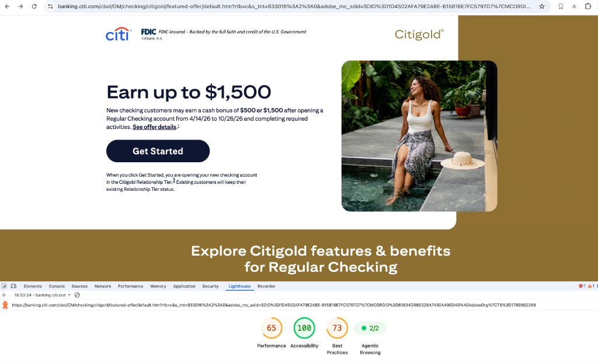
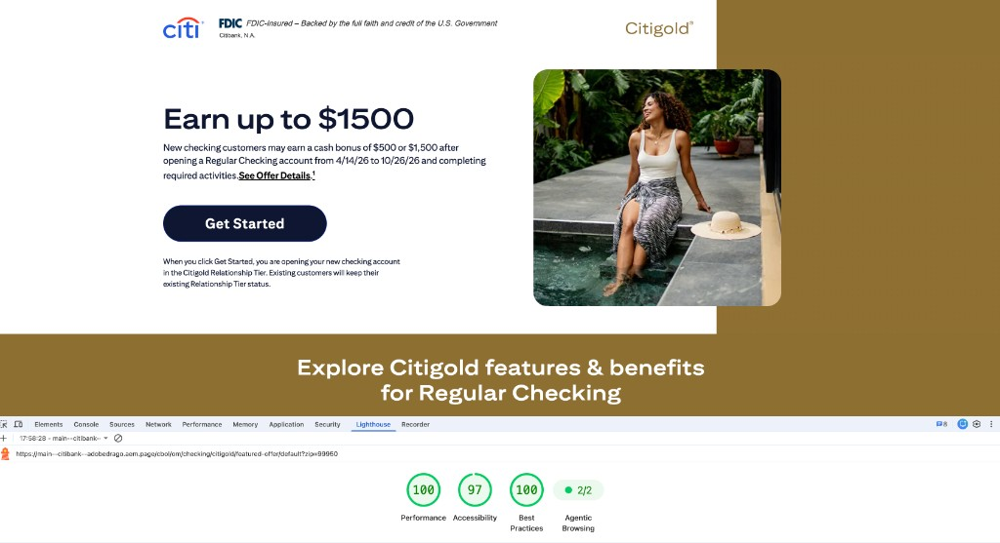
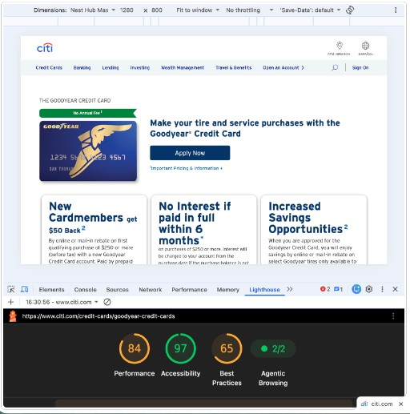
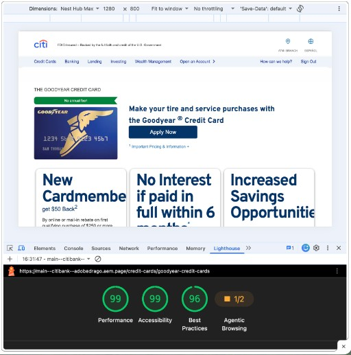
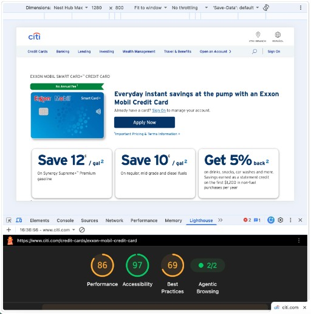
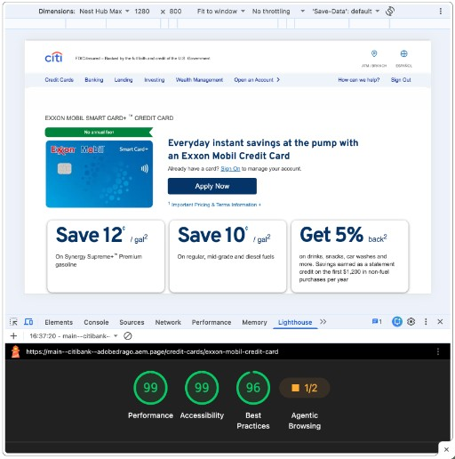
Scenario 1 — Credit Cards Explore Cards Page Completed
Live (production, migration source): www.citi.com/credit-cards/?intc=citihpmenu~creditcards~explore
EDS Explore: main--citibank--adobedrago.aem.page/credit-cards
EDS View All: main--citibank--adobedrago.aem.page/credit-cards/view-all-credit-cards
This use case covers credit-card listing, details (26 PDPs), search with facets, and Explore category views — plus pre-login banners, session-aware branding, personalization, engagement modules, and a bi-weekly content release cadence.
What this validates
- Headless complexity — how a more complex headless architecture (the current Angular implementation) translates into EDS.
- Listing & details at scale — migrate all 26 credit card product pages plus metadata-driven category listing and a filterable View All experience.
- Search with facets — filterable credit-card search (in progress per demo POV).
- Session management — session-aware header/footer branding for logged-in customers.
- Personalization — segment-driven banners, offers, and PDP content (see Scenario 3 demo path).
- Engagement modules — tiles that rely on customer cookies and behavioral signals.
View All / Explore architecture
- Metadata block authoring on each PDP
Each credit card details page includes a metadata block with title, image, fee information, and category tags for filter chips.
- Admin indexing
Metadata from all PDPs is crawled and indexed; a single query endpoint exposes structured card data for real-time frontend consumption.
- Dynamic rendering & filtering
View All fetches indexed records into a visual grid with interactive category chips (e.g. Rewards, Travel, No Annual Fee). Explore filters category card stacks.
-
Re-model the Angular headless page as EDS blocksDone. Explore category sections re-modeled (e.g.
cc-category). Content imported via the project pipeline; Explore and View All render onmain--citibank--adobedrago.aem.page. -
26 credit card detail pages + View All index/filtersPartial / in progress. Authoring workstream reports 26 PDPs migrated. Metadata → Admin index → dynamic View All grid with category chips is demonstrated on the EDS preview URLs above. Search with facets remains in progress.
-
Session-aware header/footer brandingPartial (simulated). Mocked login/ECID path (shared with Scenario 3 personalization demo) stands in for real Citi identity — no actual SSO yet.
-
Segment-driven banners, offers, and pricingPartial. PDP tagging + EDS sheet / fragment personalization demonstrated (see Scenario 3 demo URL). Not yet validated against Citi's real segment/Pega data.
-
Cookie/behavioral-driven engagement modulesConfirm engagement-module tiles can read the same customer cookies/signals used today, and that doing so complies with privacy/consent requirements.
Content release & the branch model
The original brief asked for: sync production content to lower environments immediately post-release; if conflicts exist there, generate a conflict report and halt the merge rather than auto-resolving; and monthly tech releases must never override the regular content releases.
How branches replace lower environments
The isolation "lower environments" used to provide for engineering work comes from git branches instead of separate deployed instances:
- Every branch gets a live preview automatically at
{branch}--{repo}--{owner}.aem.page— no provisioning, no deploy step, no separate environment to keep in sync. - That branch preview renders the same authored content as production, through whatever code is on that branch — an engineer testing a monthly tech change sees real, current content rendered against their in-progress code, not a stale or duplicated copy.
- Promoting a tech change is a normal PR merge to
main, which only touches code. It can't overwrite a content release because content documents live in the authoring tool, not in the code repo or the merge. - Publishing a content change (bi-weekly or otherwise) is a Preview/Publish action in the authoring tool, independent of whatever engineering branches happen to be open at the time.
Open questions
Scenario 2 — Citigold Featured Offer (ELP) In progress
Live (production, migration source): banking.citi.com/cbol/om/checking/citigold/featured-offer/default.htm
EDS preview (demo): main--citibank--adobedrago.aem.page/cbol/om/checking/citigold/featured-offer/default?zip=30301
This is one of our most complex hosted External Landing Pages (ELP) and a strong fit for the prototype because it exercises three things at once: whether a hosted page can transition into EDS, how the authoring and governance model needs to evolve for hosted pages, and whether EDS can render dynamic, location-based offer data inside an authored page.
scripts/bta.js reads authored DA workbook /cbol/zipcode-bta.json (published sheet → JSON, standing in for the live eligibility API); IN and OUT tabs drive fee rows and visibility in zip-banner / deposit-account. Pass ?zip= on the preview URL (e.g. 30301 → OUT) to exercise the gate. Draft page: drafts/citigold-featured-offer.html (imported via tools/importer/import-citigold-landing.js).
What this validates
- Hosted page migration path — demonstrates how a hosted page could transition into EDS as part of the broader cloud migration strategy.
- Authoring workflow changes — Excel/DA sheet authoring for ZIP Code and
outOfBTAresponse data, with IN/OUT tab personalization. - Dynamic API integration — DA ZIP /
outOfBTAsheet viabta.js; validates how EDS handles ZIP-driven rendering inside an authored page structure. - Automated footer content — legal and offer footer metadata populated from the sheet based on IN / OUT status with zero manual effort.
Mocking the eligibility API — DA sheet → JSON
Instead of calling Citi's live ZIP / offer-eligibility service, authors maintain a Document Authoring workbook (zipcode-bta) under CBOL. EDS publishes that sheet as /cbol/zipcode-bta.json; scripts/bta.js fetches it at runtime and maps the visitor's ZIP to an IN / OUT BTA status and governing state — the same contract a real API would return.
- Author ZIP → BTA rows in DA
Workbook
zipcode-btahas tabsdata,IN, andOUT. Thedatatab holds columnszip,outOfBTA(IN / OUT), andgoverningState— sample rows include10022→ IN / NY and30301→ OUT / SX. - Publish sheet → JSON (API stand-in)
On preview/publish, EDS serves the workbook as
/cbol/zipcode-bta.json. The browser Network panel shows a fetch returning{ data: { total, offset, limit, data: […] } }with the same rows — this is the mocked eligibility responsebta.jsconsumes. - Page applies IN / OUT from
?zip=With
?zip=30301, lookup resolves to OUT; fee schedules and footer content switch via the IN / OUT sheet tabs. Swap to an IN ZIP (e.g.10022) to confirm the alternate branch.
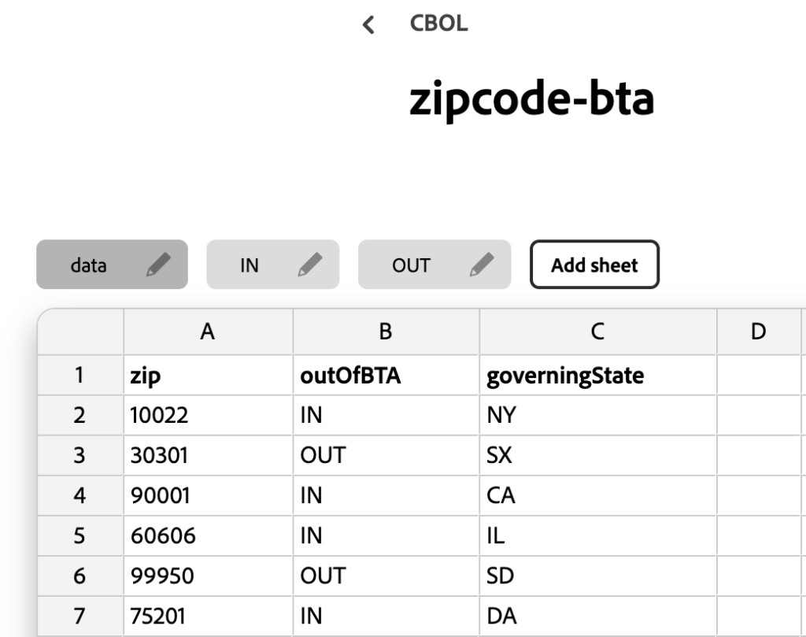
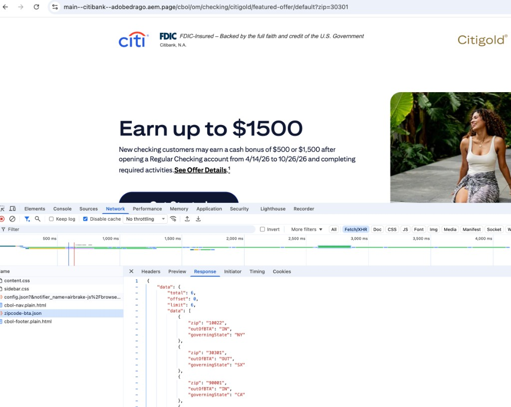
-
Render the hosted ELP structure through EDSPartial. Zip-gated Citigold offer is live on preview at
/cbol/om/checking/citigold/featured-offer/default. Full hosted-page parity and governance model still open. -
Fetch and render dynamic ZIP / outOfBTA dataPartial. DA sheet
zipcode-bta→/cbol/zipcode-bta.jsonmocks the eligibility API;bta.jsfetches it client-side and fee/footer content follows sheet status. Not the live Citi offer/eligibility backend. -
Preserve session handlingConfirm any session state the hosted page relies on carries across into the EDS-rendered page without breaking eligibility/offer logic.
-
Define the authoring & governance modelDecide who authors this page, what approvals are required, and how content release maps onto the existing hosted-page release process.
Pega banner E2E gate — publish blocker
This page carries a hard release requirement: it must be validated end-to-end with Pega banner testing before it is ever published live.
- Point preview's Apply Now to Citi UAT
Configure the EDS preview environment so the Apply Now CTA on the Pega banner routes to the Citi UAT environment, not production.
- Run the Pega banner E2E test on preview
Validate the banner renders correctly, the decisioning call resolves, and the Apply Now click-through completes against Citi UAT.
- Re-point to production before publish
Once the UAT-backed E2E test passes, switch the Apply Now target to production and only then promote the page to live.
Open questions
/cbol/zipcode-bta.json (IN/OUT tabs) via scripts/bta.js — not a live eligibility API. Confirm the real Citi source, its auth model, and whether it can be called from an EDS-rendered page without a server-side proxy before treating the sheet stand-in as production-ready.
.../featured-offer/default.htm). Confirm what the second page is and get its URL before scoping the ELP structure further — it may change the content model.
Scenario 3 — Personalized Post-Login Banners Completed
Post-login personalized banners powered by Pega in production, rendered dynamically across placements. Because live authenticated Pega integration is out of prototype scope, the demo proves the pattern with a mocked login / offer decision and EDS-authored content (sheets + fragment variations) standing in for the live backend.
EDS personalization demo: main--citibank--adobedrago.aem.page/credit-cards/aadvantage-mile-up-credit-card
What this validates
- Post-login context — banners/content vary after authentication; the demo simulates login and reads an ECID cookie to determine segment.
- Pega integration path — production content is driven by Pega decisioning; the demo stands in with mocked segment decisions so the EDS architecture can be proven first.
- Placement flexibility — segment-specific fragment pages and EDS sheet variations can be positioned independently across templates.
Demo architecture — two complementary paths
- User & segment matching
At runtime, evaluate active user context: detect login profile, check the ECID cookie, and determine the segment value.
- Pre-created fragment pages / EDS sheet variations
Segment-specific experience variations authored as standalone fragment pages, and/or Excel-based content variation with EDS as the single source of truth (no Content Fragment or GraphQL required for that path). Authoring ease via the code-select extension.
- Dynamic fragment loading
Default state when no segment matches; otherwise an edge block dynamically mounts the targeted fragment into the DOM.
Segment fragments — authoring & runtime
On the AAdvantage Mile Up PDP, a cc-fragment block points at a folder of child fragment pages. Signed out loads the *-default variation; after simulated Sign On, the ecid cookie (e.g. seg-a) selects the matching child. Same pattern as production Pega segment offers — mocked with DA-authored fragments for the demo.
- Author fragment variations in DA
Under
/fragments/credit-cards/aadvantage-mile-up-credit-card/:…-default(signed out), plus…-seg-a,…-seg-b,…-seg-cfor signed-in segments. - Embed the folder on the page
Authors drop a
cc-fragmentblock and set the path to/fragments/credit-cards/aadvantage-mile-up-credit-card.blocks/cc-fragmentresolves the child suffix fromecid(ordefaultwhen unset). - Signed out → default · Signed in → segment
With Sign On showing (no
ecid), the hero shows the default MileUp offer. After Sign On,ecid=seg-aswaps in the segment-A fragment (e.g. “Logged in User Diamond Card”). Change the cookie toseg-b/seg-cto exercise the other variations.
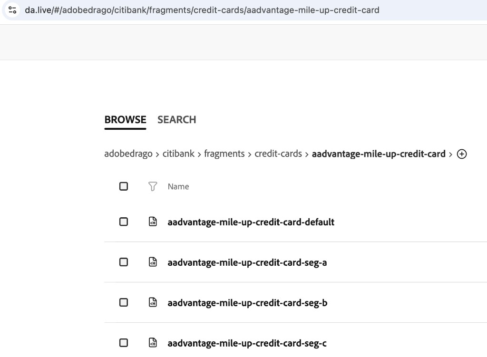
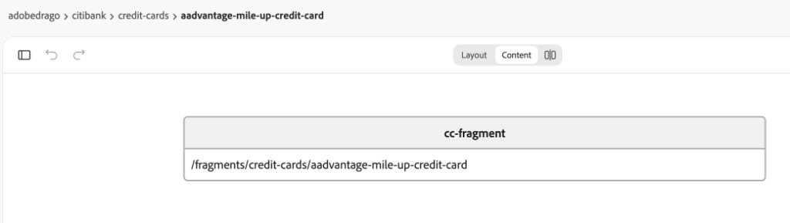
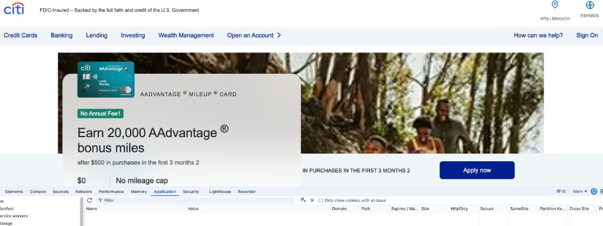
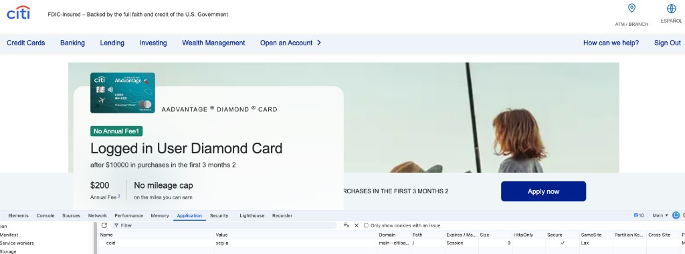
Offer sheet + code-select — token personalization
The complementary path to whole-fragment swaps: authors keep pricing/offer numbers in a shared DA workbook and place {{token}} placeholders in page copy. At runtime scripts/offer-sheet.js loads /credit-cards/offerpricingpositioning.json, picks the tab from ecid (default / seg-a / seg-b / seg-c), matches the row by page name, and fills tokens (used by hero, listing, etc.).
- Author segment tabs in the offer sheet
Workbook
offerpricingpositioningunder credit-cards has tabsseg-a,seg-b,seg-c, anddefault. Columns include Page Name, Bonus Amount, Spend Requirement, Annual Fee Amount, Liability — one row per card PDP. - Insert tokens with Code Select
In DA, open the Code Select plugin and click fields (Bonus Amount, Spend Requirement, Annual Fee Amount, …). That inserts placeholders such as
{{bonusAmount}},{{spendRequirement}}, and{{annualFeeAmount}}into the block copy — no hand-typed JSON keys required. - Runtime fills tokens from the matching tab
Signed out (no
ecid) uses thedefaulttab; signed in withecid=seg-auses that tab’s values for the current page’s row. Same cookie signal as the fragment path — sheet tokens change numbers in place without swapping the whole hero.
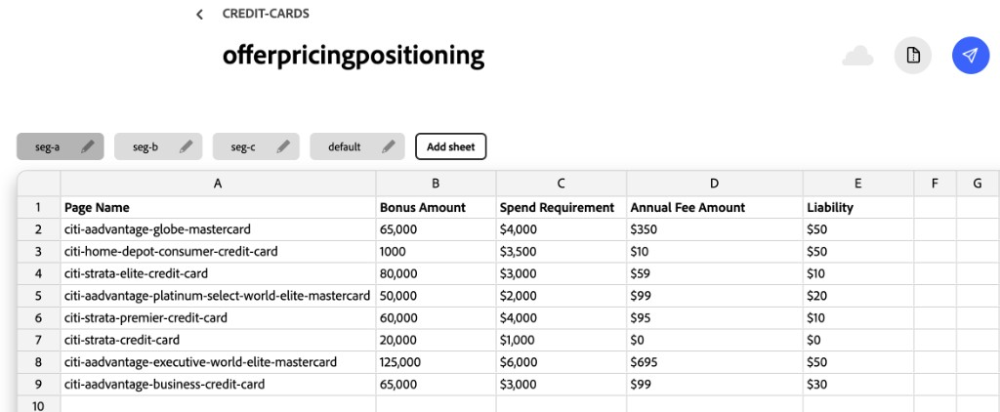
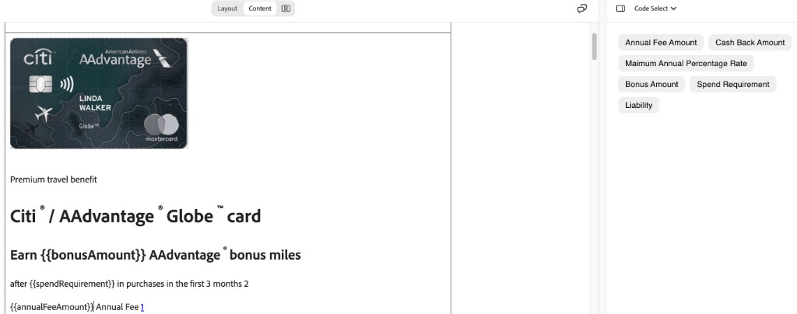
Production target — AEM / Pega Content Endpoint
Personalized offer content in production is fetched from a persisted GraphQL query against the qa3 (QA/UAT) AEM instance:
-
Fetch personalized banner / offer content post-loginPartial (mocked). Demo resolves segment from login/ECID via fragment children and
offerpricingpositioningsheet tokens (offer-sheet.js+ Code Select). Liveget-pz-offerscall still todo. -
Render into named, slot-based placementsPartial.
cc-fragment+ DA child pages (default/seg-a|b|c) demonstrate placement on the AAdvantage Mile Up PDP. Production post-login slot map still open. -
Preserve session/identity context in EDSPartial (simulated). Mocked login + ECID cookie stands in for real Citi identity/SSO. Confirm cookie forwarding vs edge proxy before wiring
qa3.
Open questions
cc-fragment, signed-out vs ecid=seg-a runtime, plus the offerpricingpositioning sheet and Code Select token authoring are documented above under Scenario 3. Production post-login slot layout (non-PDP placements) remains an open scoping question (#3).
qa3.aemapi.citi.com? Since this is a post-login surface, confirm whether the customer's session token/cookie is forwarded directly, or whether a server-side/edge proxy is required to avoid exposing internal AEM endpoints to the client.
get-pz-offers response, or is it hardcoded per block instance on the page? This decides whether "slot-based rendering" is a data-driven or an authoring-driven concern.
Evaluation themes
Each scenario was chosen to cover specific, overlapping themes. Taken together, they form a realistic test bed rather than three isolated demos.
| Theme | Scenario 1 · Credit Cards | Scenario 2 · Citigold ELP | Scenario 3 · Pega banners |
|---|---|---|---|
| Session handling | Session-aware header/footer | Pre-login, hosted-page session | Mocked login / ECID → path to post-login identity |
| Personalization | Segment-driven banners/pricing on listing & PDPs | Zip-gated offer (DA outOfBTA sheet) | EDS sheets/fragments stand-in · live Pega target |
| Authoring governance | Headless → block model · 26 PDPs · metadata blocks | Hosted-page → EDS · Excel IN/OUT tabs | Code-select · fragment variations |
| Content release workflows | Content/code decoupling — native to EDS, no custom sync needed | Pega E2E gate before publish | — |
| Dynamic API integration | Index query · search · engagement-module signals | DA ZIP sheet → live offer API TBD | AEM GraphQL (get-pz-offers) target |
Next steps
Close the environment-switching, auth, and ownership questions raised in each scenario before treating mocks as production-ready.
Replace the DA ZIP / outOfBTA sheet stand-in and mocked login/segment decisions with Citi's real offer API and qa3 Pega GraphQL when access is available.
Citigold Featured Offer, Goodyear, and Exxon Mobil are captured in Lighthouse comparison. Optionally add Explore Cards and more PDPs under docs/images/.
Walk Citi's team through how EDS's single content source + git branches already satisfy their prod/lower-env sync and release-isolation requirement.